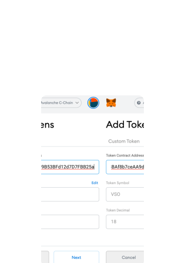
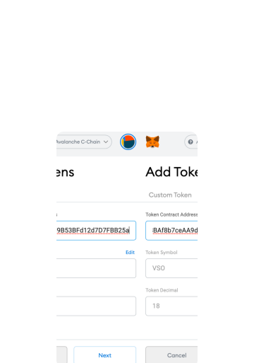

.svg) Home
Why Verso
Team
Roadmap
Blog
Whitepaper
Buy $VSO
Home
Why Verso
Team
Roadmap
Blog
Whitepaper
Buy $VSO
How to buy VSO
Verso(VSO) is currently available on Gate.io as well as on several decentralized exchanges(DEX) connected to the Avalanche blockchain.
CEX Listings DEX Listings
If you’re new to Avalache, we suggest you also to check out our Reference Guide 〉


How to add VSO to Metamask
 
